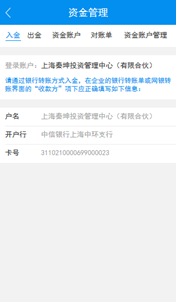
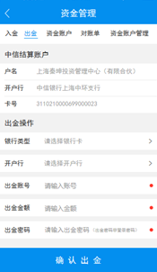
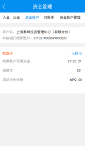
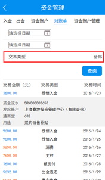
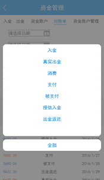
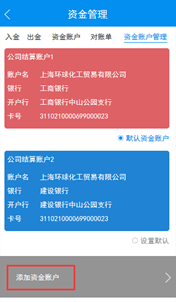
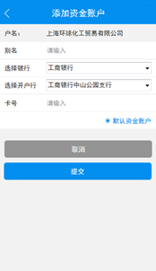

资金管理信息有哪些？
登录后轻触【我的】->【资金管理】可对资金信息进行查看及操作。
1.入金：通过银行转账方式入金，收款方需要争取填写用户的开户信息。

2.出金：正确填写对方账户信息，输入出金密码即可出金。

3.资金账户查询：可查看当前用户的资金可用余额、冻结金额以及通商宝的返利总额。

4.对账单：可查看用户的所有资金操作。
 
5.资金账户管理：可为当前用户添加多张银行账户并设置为默认资金账户。
 